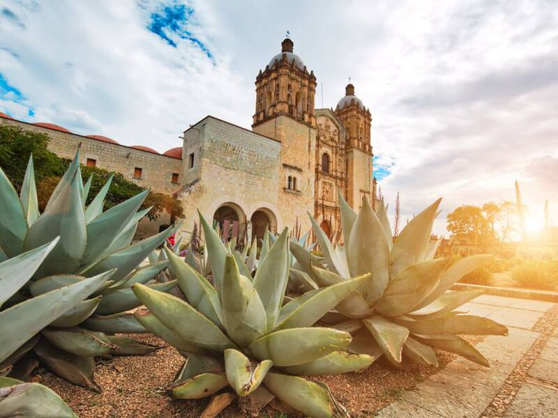

Blog de viajes por Oaxaca
Recorriendo el estado

Oaxaca, oficialmente el Estado Libre y Soberano de Oaxaca, es uno de los treinta y un estados que, junto con la Ciudad de México, forman los Estados Unidos Mexicanos.
Su capital y ciudad más poblada es Oaxaca de Juárez. Está dividido en 570 municipios, 418 de los cuales se gobiernan bajo el sistema de usos y costumbres, con formas locales reconocidas de autogobierno.
Está ubicado en la región suroeste del país. Limita al norte con Puebla y Veracruz, al este con Chiapas, al sur con el océano Pacífico y al oeste con Guerrero. Con 93 757 km², es el quinto estado más extenso —por detrás de Chihuahua, Sonora, Coahuila y Durango— y, con 3 967 889 de habitantes en 2015, el décimo más poblado. Se fundó el 21 de diciembre de 1823.
El estado es conocido principalmente por sus pueblos indígenas y afromexicanos, representados por más de 16 grupos étnicos, y los zapotecos y mixtecos son los de mayor representación. Estas culturas han sobrevivido y mantenido sus usos y costumbres con mayor éxito que el resto del territorio nacional, gracias al accidentado y aislado territorio del estado. La mayoría de estos grupos habitan la zona centro del estado, cuya riqueza cultural, que incluye zonas arqueológicas como Monte Albán y Mitla, la convierten en una zona turística de importancia.
Otras zonas turísticas de importancia se encuentran en la costa, con complejos de importancia como Bahías de Huatulco, Puerto Escondido, Zipolite, Mazunte y Chacahua. Así mismo, Oaxaca es considerado como uno de los estados con mayor diversidad geográfica y biológica, por su complejo relieve y el elevado número de especies endémicas de reptiles, anfibios, mamíferos y plantas.
¿Qué no te puedes perder en Oaxaca?
Tienes que saber que a esta ciudad se llega con hambre y mucha, porque tiene una oferta gastronómica espectacular: desde empezar el día con unas enfrijoladas en el mercado, hasta terminarlo con el menú de degustación en algún restaurante de alta cocina oaxaqueña.
En cuanto a la comida tienes que probar el mole en todas sus variantes -en especial el mole negro y amarillo-, probar las tlayudas con quesillo y tasajo y disfrutar de una nieve de fruta o de sorbete (una especie de helado de natilla). Claro que la cocina oaxaqueña es riquísima en todos aspectos y muy compleja, así que te recomendamos reservar en los siguientes restaurantes para que realmente entres en contacto con esta gastronomía tan especial:
Pitiona
Criollo
Casa Oaxaca
Las 15 letras
“Juanita”, dentro del mercado Benito Juárez.
Ya con el importantísimo tema culinario resuelto, tienes que recorrer el centro histórico, nombrado patrimonio de la humanidad por la UNESCO, en donde encontrarás parques, plazas, iglesias y casas antiguas que te harán viajar en el tiempo.
Aparte de la imponente catedral de La Asunción, un imperdible es la preciosa Catedral de Santo Domingo, un hermosa construcción de cantera rosa y estilo barroco novohispano que alberga en su interior un retablo labrado en oro que quita el aliento. Entra al Museo de las Culturas, ubicado junto a la catedral (en lo que fuera el monasterio) para conocer más sobre la historia de Oaxaca y sentir que viajas en el tiempo.